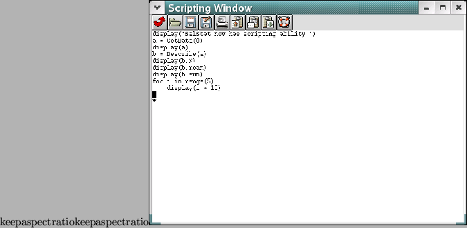

One of the exciting developments of SalStat has been the ability for users to write their own scripts. These scripts can access the internals of SalStat quite easily, and allow the user to automate almost anything that they want, from loading a file, getting a set of descriptives, writing a new test using these descriptives as well as performing an anova, then putting the results into a webpage.
Sadly, there is support for only one language - Python, which is the language in which SalStat is written. The good news is that Python is easy to learn, has lots of online free documentation available, and has a remarkably clear syntax.
In case you think Python is not suitable, remember that it is used by NASA (and SalStat!).

In this chapter, there will be an introduction to scripting. Sadly, this will assume a basic knowledge of Python (knowing what variables are, what functions are and so on), but if you know another computer language, it will be easy to pick up. In the appendices, there is a full reference of commands especially for SalStat. If you are using the single executable, then the range of commands will be relatively limited. If, however, you have Python installed (and it's usually worth it!), you will have an enormous amount of tools available, with everything from modules that can control web browsers, send emails, query databases, draw complex graphics, make sounds and much more. See the Python website for more details: http://www.python.org/documentation.html